Para este juego necesitamos cuatro botones para navegar entre las distintas pantallas del juego.
Un título que pondremos encima de los botones iniciales.
Tres nubes que aparecerán en la pantalla del menú y en el juego.
Una Cuenta atrás que inicia el juego.
El personaje del juego que tendrá que ir cogiendo las monedas.
Una pelota que nos quitará la vida y una moneda que nos dará puntos.
Un objeto "X2" que multiplicará por 2 los puntos que tengamos si lo cogemos.
Y finalmente, una medalla que será de oro, plata o bronce dependiendo de los puntos obtenidos.
Usaremos varios escenarios. El escenario menú le pondremos para el menú inicial.
El escenario juego lo pondremos durante el juego.
El escenario game over lo pondremos cuando terminemos el juego y el escenario ayuda lo pondremos cuando le
demos al botón "Como Se Juega".
Para descargar los objetos necesarios para el juego, lo haremos desde este link. Es un archivo comprimido con 14 objetos y 4 escenarios. Lo descargaremos y lo descomprimimos en el directorio del alumno.
El juego consiste en ir recogiendo monedas del cielo con nuestro personaje. Cuidado con la pelota, que nos
hará terminar el juego.
Programaremos primero la pantalla del juego. Posteriormente añadiremos la pantalla del menú principal, la de ayuda y la de game over.
Vamos a empezar por poner a nuestro personaje. Todo lo que hagamos ahora lo pondremos bajo un mensaje
"Empezar" ya que lo utilizaremos más tarde desde la pantalla de inicio. También se puede poner bajo "Al Hacer
Clic En La Bandera" y después cambiarlo.
Empezaremos por colocarlo en el centro de la parte superior y le pondremos uno de los tres disfraces que tiene
de manera aleatoria.
Lo mostraremos y programaremos el movimiento por toda la pantalla con los cursores. Añadiremos al final "Si
Toca Un Borde, Rebotar".
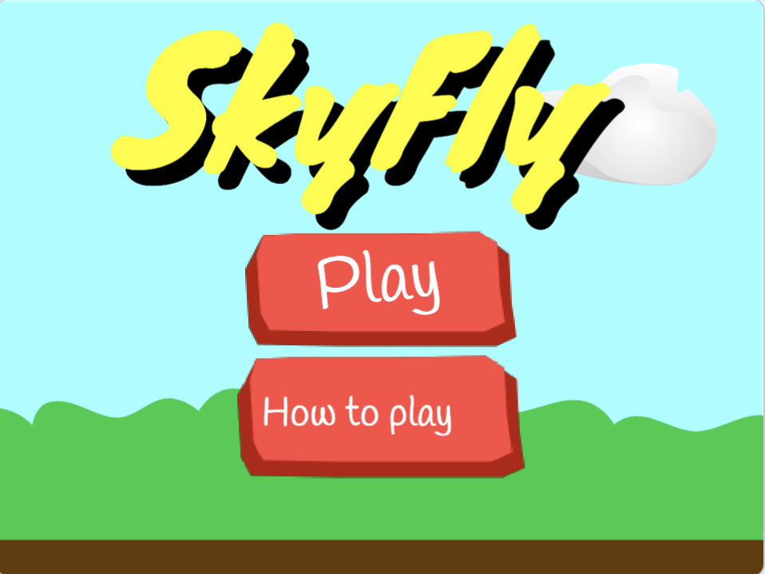
A continuación, programaremos la moneda. Crearemos una variable "Puntos" donde los iremos guardando y lo inicializaremos a "0" al empezar, además de esconder el objeto.
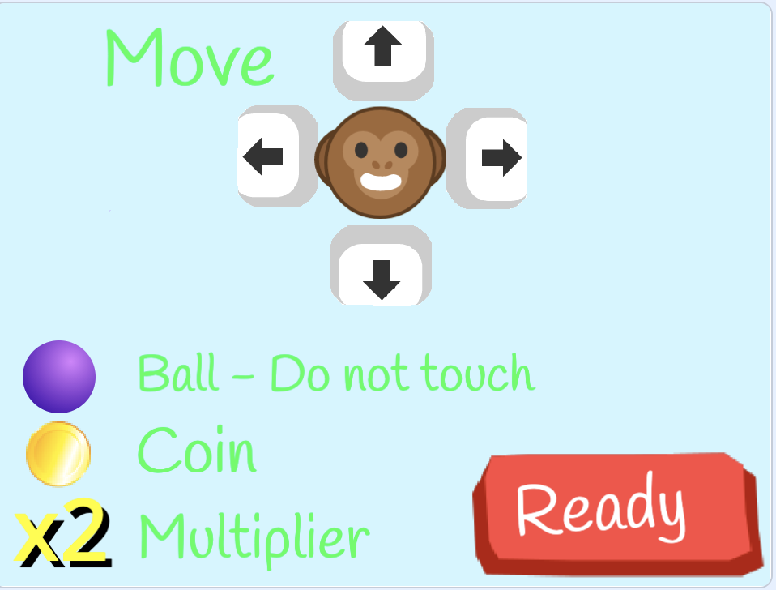
Al recibir el mensaje "Empezar", haremos un bucle que irá colocando la moneda en la parte inferior cada vez
que llegue a la parte superior o toque al personaje.
La colocaremos en la parte inferior y en una posición aleatoria en el eje "X" y esperaremos un segundo para
mostrarla y empezar a moverla.
El movimiento lo haremos hasta que toque el borde superior o al personaje.
Si tocamos al personaje, añadimos 1 punto y hacemos el sonido de coger la moneda. Finalmente la escondemos.
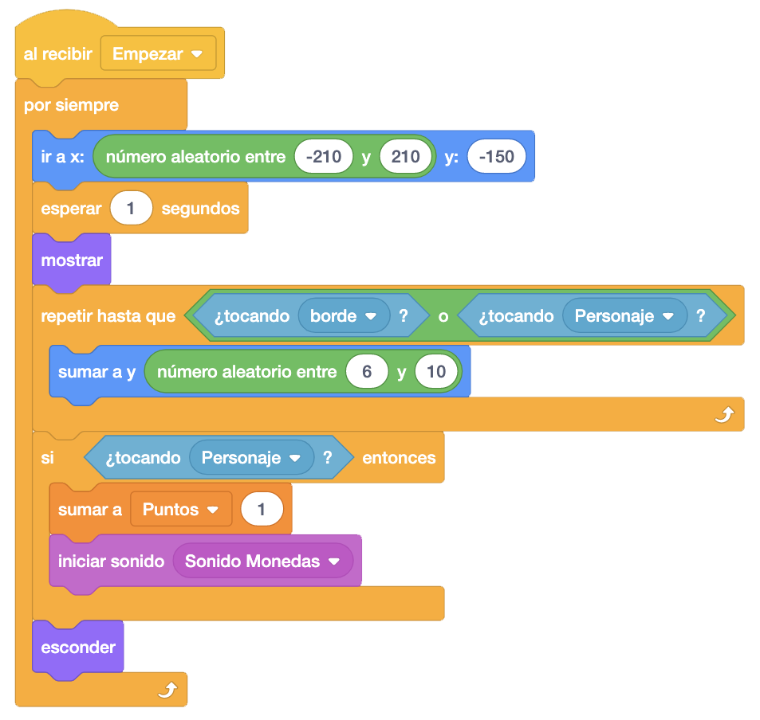
También haremos un bucle donde iremos cambiando de disfraz para simular el movimiento de la moneda. Esto también lo haremos al recibir el mensaje "Empezar".
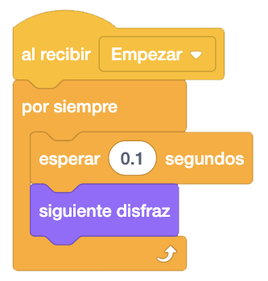
Es el turno de la pelota que nos quitará la vida. Crearemos una variable "Velocidad Pelota" que inicializaremos al empezar a "5", además de esconder el objeto.
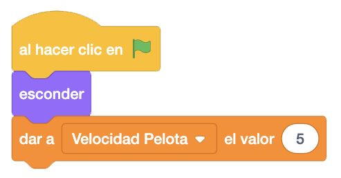
Al recibir el mensaje "Empezar", haremos un bucle que irá colocando la pelota en la parte inferior cada vez
que llegue a la parte superior o toque al personaje.
La colocaremos en la parte inferior y en una posición aleatoria en el eje "X" y cada esperaremos un tiempo
aleatorio para mostrarla y empezar a moverla.
El movimiento lo haremos hasta que toque el borde superior o al personaje.
Si tocamos al personaje, mandaremos un mensaje "Game Over" que luego programaremos en casi todos los objetos.
Finalmente la escondemos.
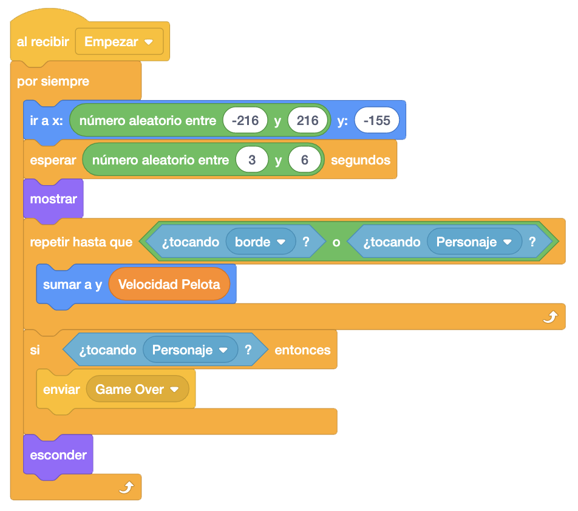
Haremos un bucle donde iremos incrementando la velocidad de la pelota cada un número aleatorio de segundos y haciendo el sonido del que subimos de nivel. Esto también lo haremos al recibir el mensaje "Empezar".
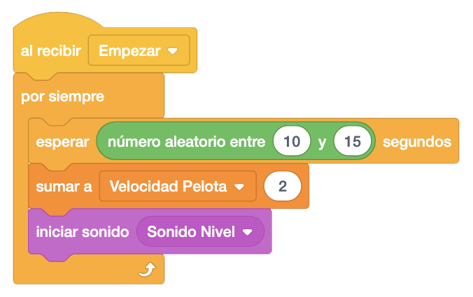
Vamos a colocar un par de nubes que solo serán decorativas. Las esconderemos al empezar y al recibir el
mensaje "Empezar", las colocaremos (una en la parte derecha de la pantalla y otra en la parte izquierda) en
la zona inferior de la pantalla.
Las mandaremos a la capa trasera, para que no molesten y las mostraremos. Haremos un bucle para moverlas
hacia arriba y aprovecharemos la velocidad de la pelota (la variable) para incrementar la "Y" en el movimiento.
Si tocamos el borde superior, volvemos a colocarla en la parte de abajo.
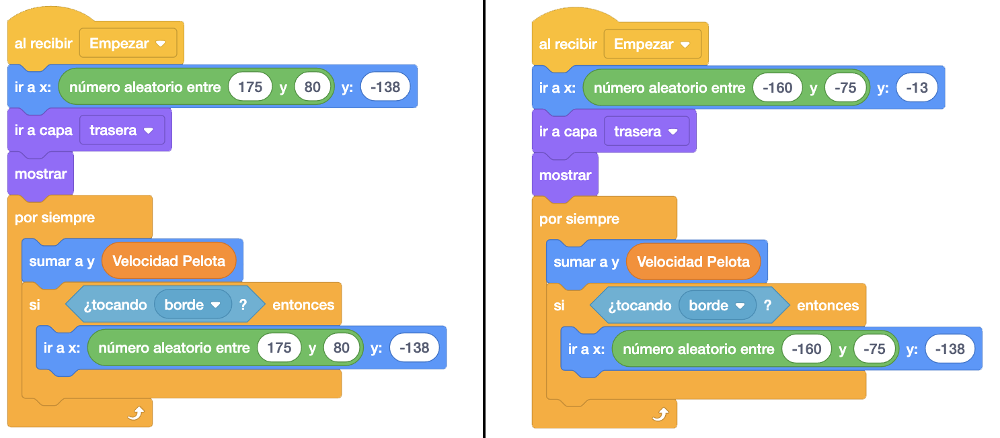
Vamos a programar ahora el objeto "X2", que ocultaremos al empezar. Al recibir el mensaje "Empezar", haremos
un bucle donde lo colocaremos en una posición aleatoria de la parte de abajo y esperaremos también un número
aleatorio de tiempo para mostrarlo y moverlo hacia arriba hasta que toque el borde superior o a nuestro
personaje.
Si tocamos al personaje, multiplicamos los puntos por 2 y hacemos sonar un sonido. Finalmente lo escondemos.
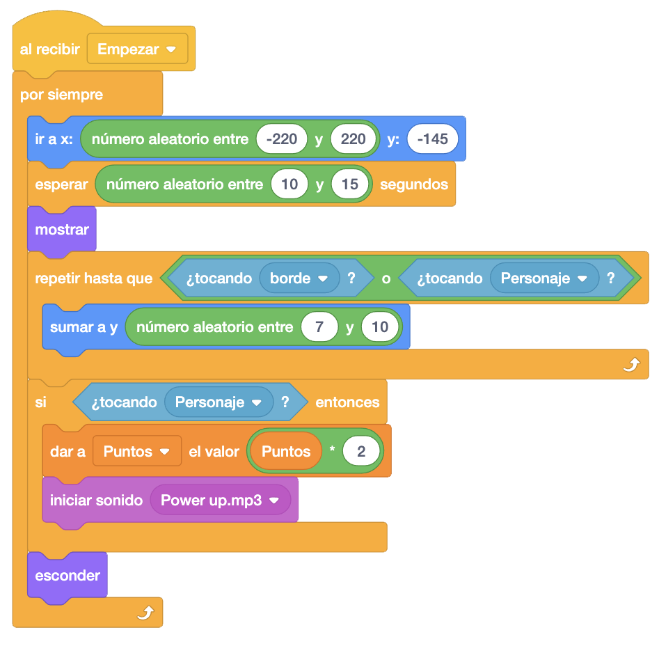
Haremos también un bucle para cambiar de disfraz.
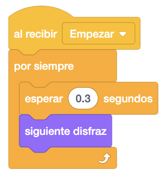
Programaremos ahora el mensaje "Game Over" en los objetos que ya tenemos.
En nuestro personaje, en la moneda, en la pelota, en las dos nubes y en el objeto "X2", esconderemos el
mensaje y detendremos otros programas del objeto.
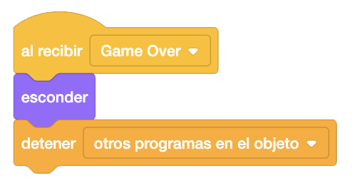
Programaremos ahora el recibir el mensaje "Game Over" en el escenario, donde quitaremos todos los sonidos, cambiaremos el fondo al de "Game Over", mostremos la variable "Puntos" y haremos sonar el sonido "Game Over".
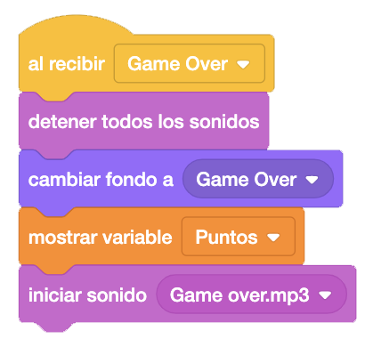
Programaremos a continuación la medalla. Vamos a esconder el objeto "Al Hacer Clic en la Bandera" y al recibir el mensaje "Empezar".
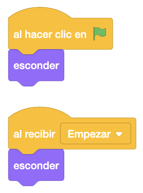
Al recibir "Game Over" colocaremos el objeto y esperaremos el tiempo suficiente para que termine el sonido de
"Game Over".
Evaluaremos ahora los puntos conseguidos. Si hemos conseguido entre 50 y 500 puntos, mostraremos medalla de
bronce. Si hemos conseguido entre 500 y 1000 puntos, mostraremos medalla de plata. Y si hemos conseguido
más de 1000 puntos, mostraremos medalla de oro.
Además, reproduciremos un sonido y mostraremos el objeto.
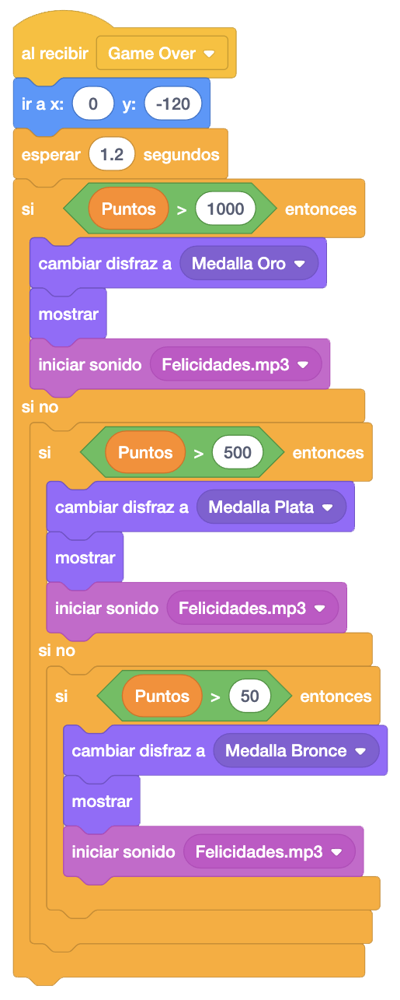
Ahora pondremos el botón "Reset", que nos hará volver a jugar. Lo ocultaremos al iniciar el juego.
Al recibir el mensaje "Game Over", lo colocaremos en la esquina inferior derecha y lo mostraremos.
Mientras estemos en este fondo, haremos un efecto en el botón, que haremos posteriormente en el resto de
botones que vamos a poner. Repetiremos que, si lo estamos tocando con el puntero del ratón, lo haremos más
pequeño y si no, lo dejaremos en su tamaño original.
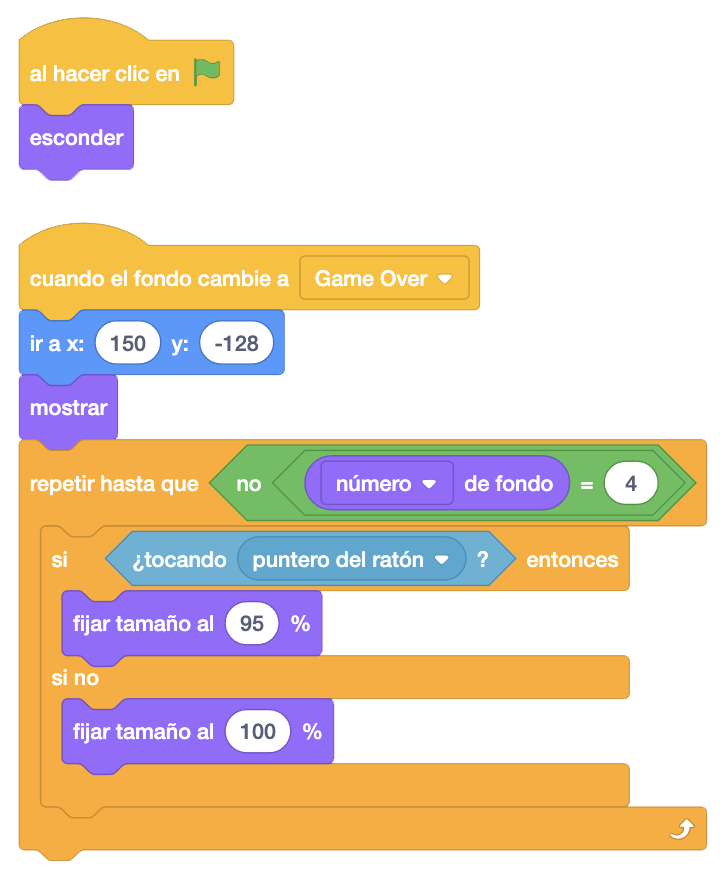
Cuando hacemos clic en el botón, iniciaremos el juego de nuevo, poniendo los "Puntos" a "0" y la velocidad de la pelota a "5", cambiando al fondo a "Juego", mandando el mensaje "Empezar" y escondiendo el botón.
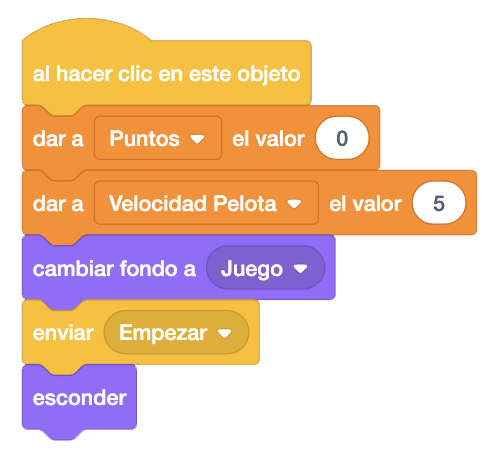
Nuestro juego ya funciona perfectamente. Ahora vamos a poner una pantalla de inicio.
Lo primero que haremos será cambiar la programación inicial que teníamos en el escenario. Cambiaremos que al
hacer clic en la bandera, en lugar de poner el fondo del juego y enviar el mensaje "Empezar", simplemente
pondremos el fondo "Menú", iniciaremos el sonido "Sonido de Comienzo" e inicializamos la variable "Puntos" a
"0" y la ocultaremos.
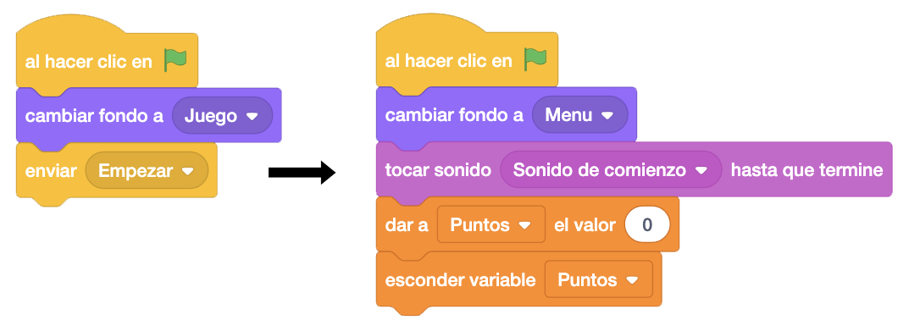
Vamos a programar el objeto "Título" que aparecerá en la pantalla de inicio con un efecto de movimiento. Al
empezar, lo colocaremos en el centro de la pantalla y lo esconderemos.
Después, pondremos una nueva etiqueta de eventos "Cuando El Fondo Cambia A", donde controlaremos que si el
fondo que colocamos es el "Menú", lo mostraremos y haremos un movimiento continuo del título.
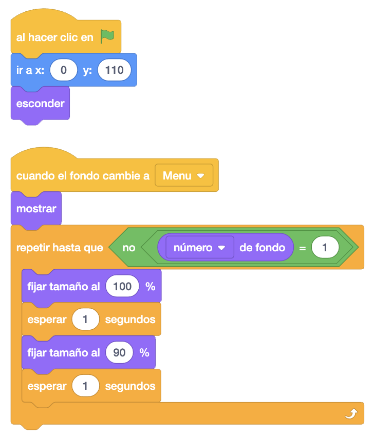
También pondremos que cuando el fondo cambie a "Ayuda" o cuando recibamos el mensaje "Jugar", lo esconderemos.
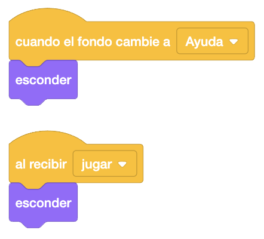
Pondremos ahora una nube que vaya pasando de derecha a izquierda por la pantalla de inicio. Al empezar lo esconderemos y lo colocaremos en su posición debajo del título
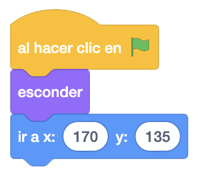
Para el movimiento, programaremos que cuando el fondo cambie a "Menú", lo mostraremos y lo moveremos de derecha a izquierda, y cuando llegue al final, la volveremos a la derecha.
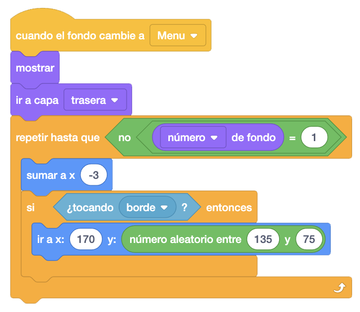
También pondremos que cuando el fondo cambie a "Ayuda" o cuando recibamos el mensaje "Jugar", lo esconderemos.

Colocaremos a continuación el botón "Jugar". Para empezar, lo esconderemos y lo colocaremos en el centro de
la pantalla.
Cuando el fondo cambie a "Menú", lo mostraremos y haremos un efecto donde al pasar el ratón por encima del
botón, este se hará más pequeño.
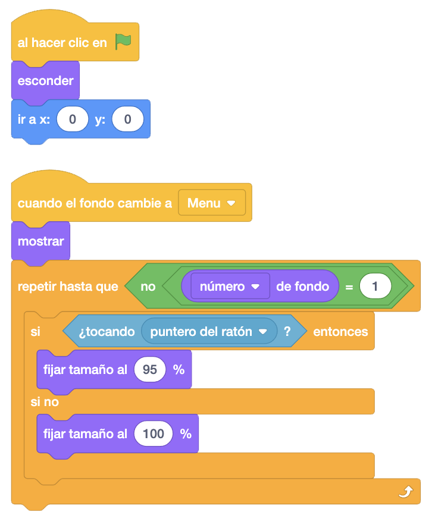
Al pulsar el botón, tocaremos un sonido, esconderemos el botón y enviaremos el mensaje "Jugar". No enviamos el mensaje empezar ya que previamente vamos a realizar una cuenta atrás antes de poder jugar. También cambiaremos el fondo al de "Juego".
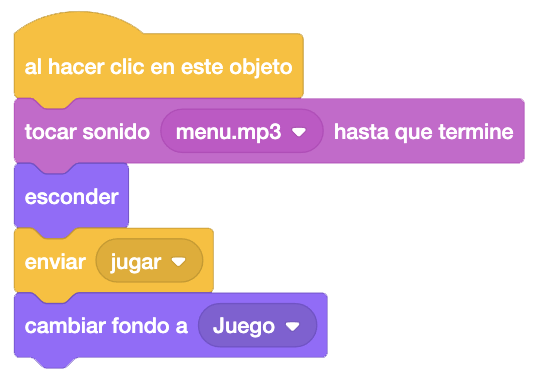
También programaremos que al recibir el mensaje "Jugar" detenga todos los sonidos y que al cambiar el fondo a "Ayuda", esconda el botón.
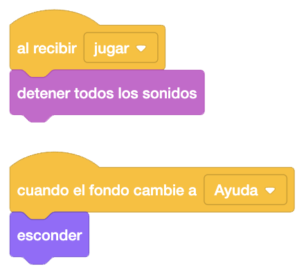
Vamos a hacer la cuenta atrás antes de empezar a jugar. Al empezar, lo esconderemos, pondremos el disfraz del "3" y lo posicionaremos en el centro de la pantalla.
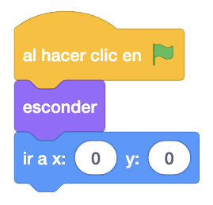
Ahora mostraremos el objeto e iremos haciendo la cuenta atrás, con un sonido por número. Al final, mandaremos el mensaje "Empezar", esconderemos el mensaje y mostraremos la variable "Puntos".
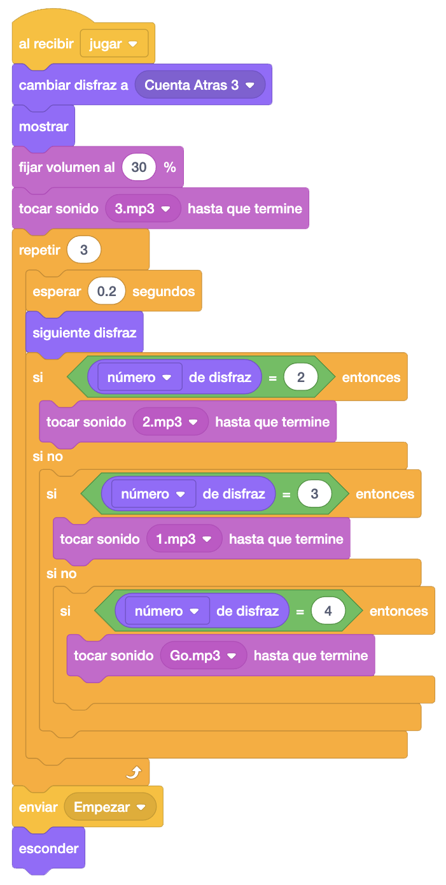
Nos pondremos ahora con el botón de ayuda de la pantalla inicial. Al empezar, lo escondemos y colocamos
debajo del botón de jugar.
Cuando el fondo sea el "Menú", mostraremos el botón y mientras esté este fondo, haremos el mismo efecto que
con el botón jugar, si pasamos por encima con el ratón, se hace más pequeño.
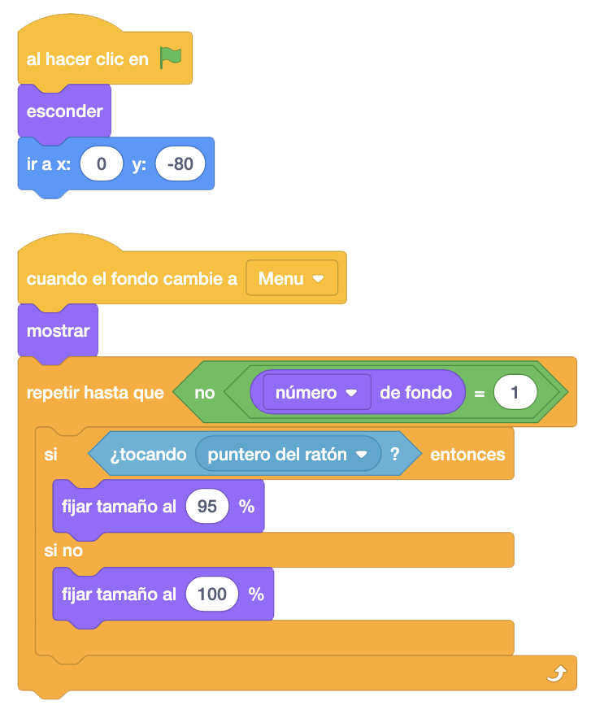
"Al Hacer Clic en el Objeto", esconderemos el botón y cambiaremos el fondo al de "Ayuda". Por último, al recibir el mensaje "Jugar", también lo esconderemos.
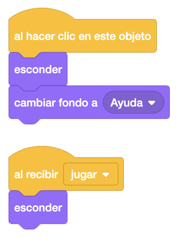
Añadiremos el último objeto, que será el botón de "Volver" en la pantalla de ayuda. Inicialmente, lo
escondemos y lo colocamos en la esquina inferior derecha.
Cuando cambiemos el fondo al de "Ayuda", haremos el mismo efecto que con el resto de botones, al pasar por
encima, lo haremos más pequeño.
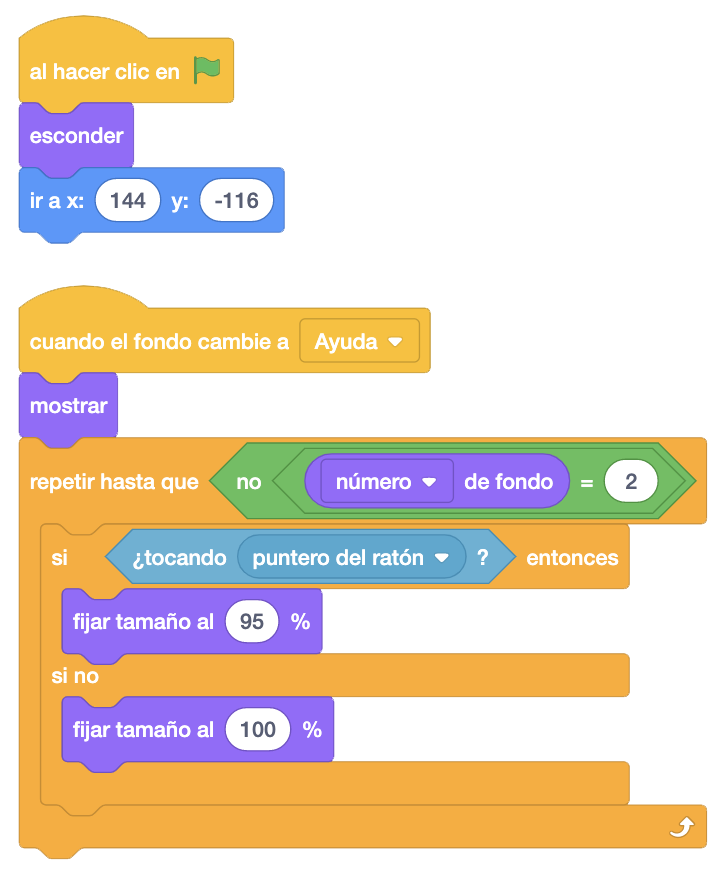
"Al Hacer Clic en el Objeto", esconderemos el botón y cambiaremos el fondo al del "Menú".
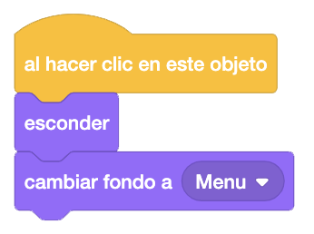
Lo único que nos falta sería añadir la música del juego. Iremos al escenario y programaremos que al recibir "Empezar", fijaremos el volumen al 30% y continuamente pondremos la música hasta que termine.
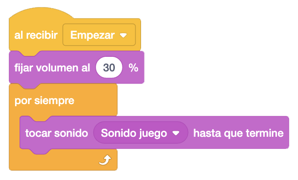
El juego está hecho sin clones, pero para aumentar la dificultad podríamos hacerlo con clones para los objetos de Nubes, Monedas y Pelota y así poder quitar algún que otro objeto innecesario.
Y el juego quedaría así.

Para ver el juego terminado pulsa
aquí.
Para descargarte el juego terminado pulsa
aquí.